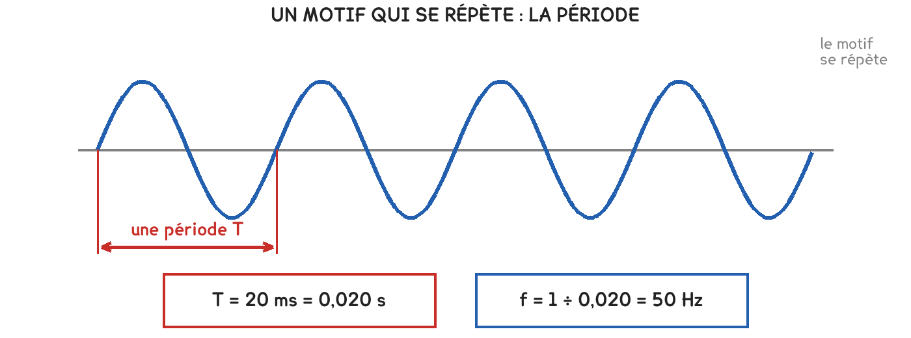

CAP · consolidation maths
L'une est l'inverse de l'autre. Quand la période double, la fréquence est divisée par deux, et c'est le contraire d'une proportionnalité.
4 questions · 6 exercices · 12 items d'entraînement · 1 repli · 1 figure
Savoirs travaillés

Ce n’est pas une proportionnalité, c’est son contraire. Dans un tableau de proportionnalité, quand l’un double, l’autre double. Ici, quand la période double, la fréquence est divisée par deux.
| Ce que je fais | Le calcul | Résultat |
|---|---|---|
| je lis la période | un motif occupe 20 ms | 20 ms |
| je convertis en secondes | 20 ÷ 1 000 | 0,020 s |
| j’applique f = 1 ÷ T | 1 ÷ 0,020 | 50 Hz |
| je vérifie | c’est la fréquence du secteur en France | cohérent |
On divise 1 par 20 au lieu de 1 par 0,020. Le résultat, 0,05 Hz, est mille fois trop petit, et il ne choque personne tant qu’on ne connaît pas l’ordre de grandeur attendu. Les millisecondes se convertissent avant la division, jamais après.
Pour aller plus loin
50 Hz. Le secteur en France et dans presque toute l’Europe. Sa période vaut 0,020 s, soit 20 ms. C’est le repère à retenir : un motif de 20 ms sur l’écran, c’est le secteur.
60 Hz. Le secteur en Amérique du Nord et dans une partie de l’Asie. Sa période vaut 1 ÷ 60 = 0,0167 s, soit environ 17 ms.
C’est pour cela qu’un appareil importé peut chauffer ou tourner trop vite : un moteur prévu pour 60 Hz branché sur du 50 Hz tourne plus lentement, et l’inverse est pire.
Les mêmes séries que sur la feuille. On remplit chaque case, puis on vérifie la série entière d’un coup.
Série · CN
Série · CN
Série · CN
Sur l’oscilloscope branché au tableau, un motif complet occupe 20 ms.
Exercice · CN
Quelle est la fréquence de cette tension ?
Exercice · CN
Un moteur importé est prévu pour 60 Hz. Quelle est sa période, en millisecondes, au dixième ?
Exercice · AA
Une autre tension a une période de 40 ms. Quelle est sa fréquence ?
Exercice · AA
Qu’arrive-t-il à la fréquence quand la période double ? Répondez avec les deux couples de nombres que vous venez de calculer, puis dites pourquoi ce n’est pas une proportionnalité.
Deux questions de plus, sans méthode indiquée.
Exercice · CN
L’écran de l’oscilloscope affiche 100 ms de signal en largeur totale. Combien de motifs complets du secteur y voit-on ?
Exercice · AA
Calculez T × f pour le secteur, puis pour le moteur à 60 Hz, en gardant T en secondes. Que remarquez-vous ? Dites ce que cela signifie.
Fiche de consolidation. Aucun corrigé ; rien n'est enregistré, rien n'est noté.